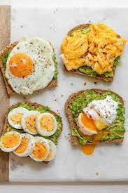

Avocado and Egg Toast

Description
This breakfast is incredibly healthy as it contains avocado which is rich in vitamins and eggs which have iron. However you should not overeat this as it is rich in fats.
Ingrediants
- Eggs
- avocado
- bread
- Seasoning(Depends on personal preference - could be salt, black paper, red paper)
Steps
- Cut the avocado and spread it on the slices of bread
- Cook the eggs in a way you like them(boiled, fried, mashed)
- put the eggs on top pf the bread slices
- Season and you have a tasy and healthy breakfast